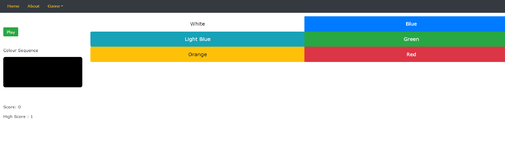

This is a memory game. This requires skill, patience and, of course, a good memory.

The game is simple, you will be shown a series of colours on the screen.
You must be able to correctly
replicate the sequence of colours or you will lose a life.
A loss of a life will be shown by a light turning off.
Once all the lights have turned off the lights will flash red and your score will be shown on screen.
Try your best to get the highest score you can and, be careful, because the higher the score, the quicker the
sequence